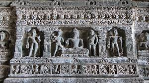
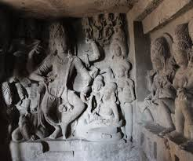
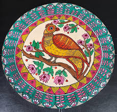
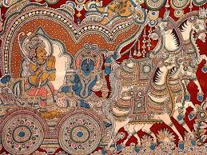
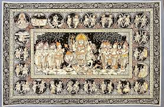
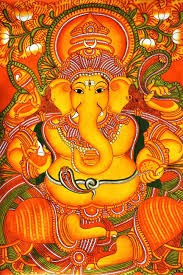
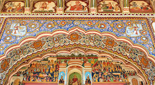
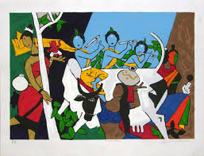
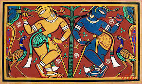
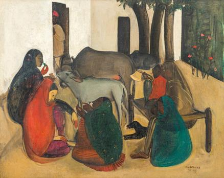

Example: Ajanta & Ellora Cave Paintings


⮚ Ancient Indian art reflects the spiritual and cultural evolution of the civilization. From the Ajanta and Ellora cave paintings to sculptures in Sanchi and Bharhut, these works showcase religious devotion, royalty, and daily life. Created between 2nd century BCE to 6th century CE, they are timeless treasures of Buddhist, Jain, and Hindu traditions.
More information about this place :- Click Here
Examples: Madhubani (Bihar), Kalamkari (Andhra), Pattachitra (Odisha)



⮚ Indian handicrafts are not just utility items—they're vibrant expressions of regional identity. Art forms like Madhubani, Kalamkari, and Pattachitra blend storytelling, tradition, and community heritage. Passed down through generations, these handmade crafts keep ancient techniques alive even today.
More information about this festival :- Click Here
Examples: Kerala Murals, Shekhawati (Rajasthan) Murals


⮚ Mural paintings in India are majestic wall arts found in temples, palaces, and homes. From the mythological murals of Kerala to the colorful frescoes of Rajasthan, they narrate epics, deities, and folk tales. These large-scale works use natural pigments and carry deep symbolic meaning.
More information about this festival :- Click Here
Examples: M.F. Husain, Jamini Roy, Amrita Sher-Gil



⮚ Modern Indian art emerged as a fusion of tradition and contemporary thought. Artists like M.F. Husain and Amrita Sher-Gil redefined visual storytelling using bold strokes and abstract ideas. It represents freedom, innovation, and India's response to global artistic movements.
More information about this festival :- Click Here